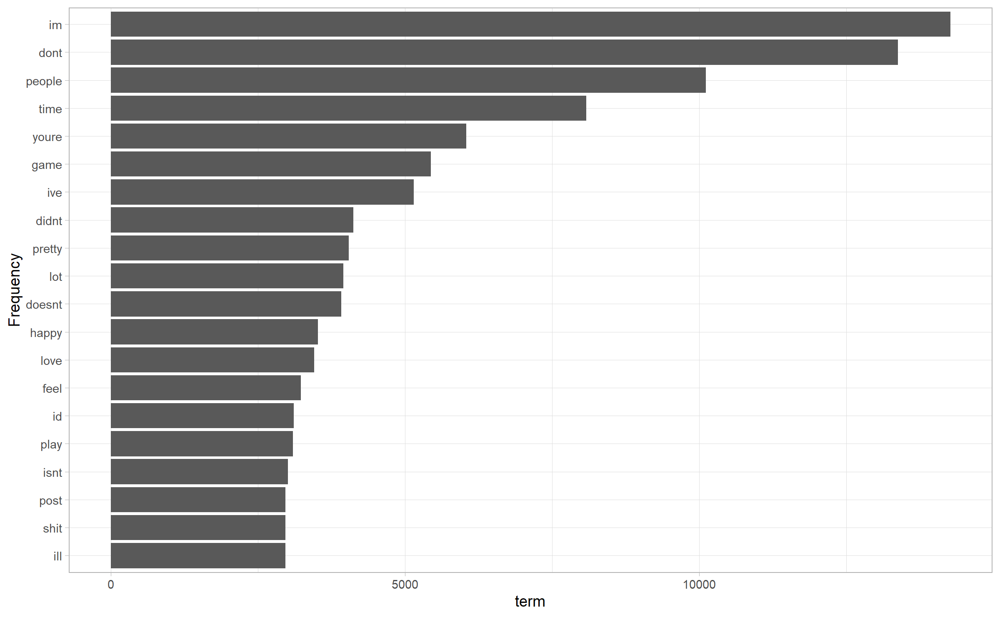
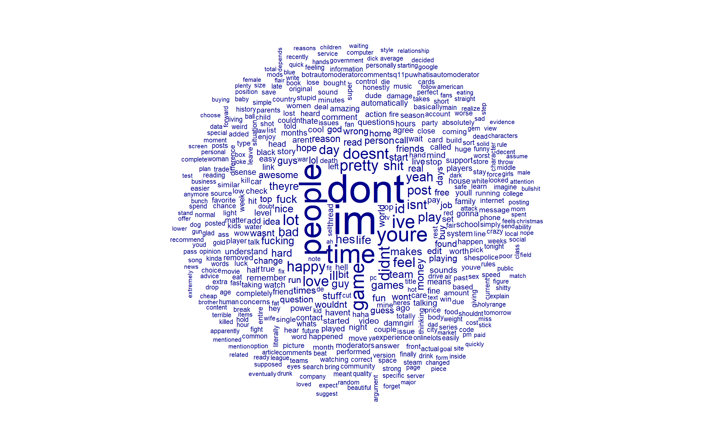
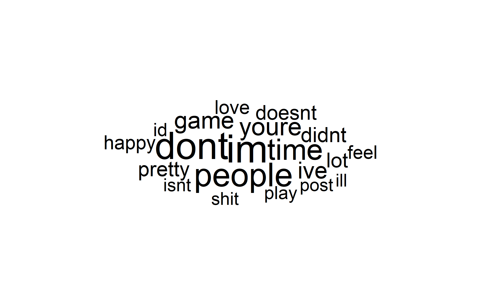
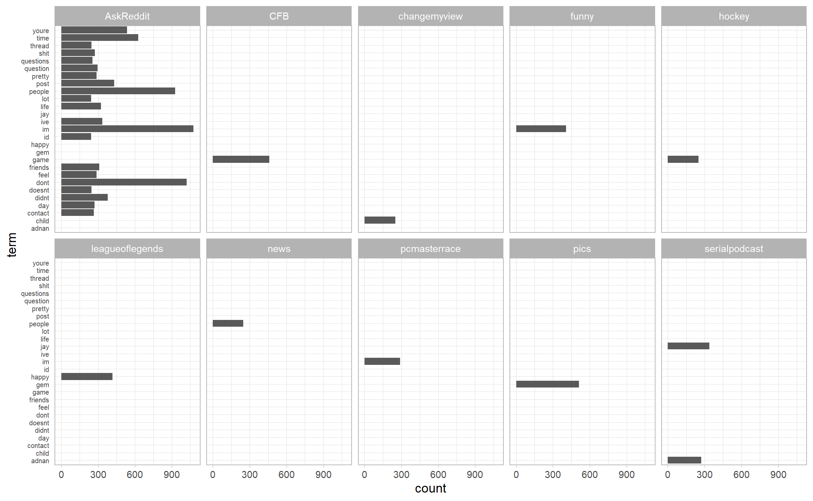
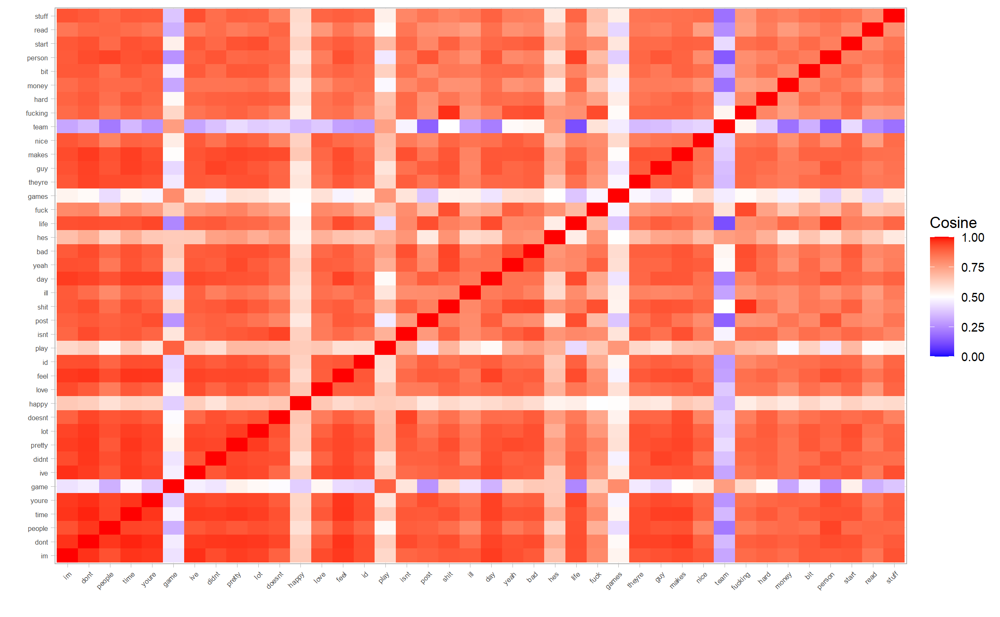
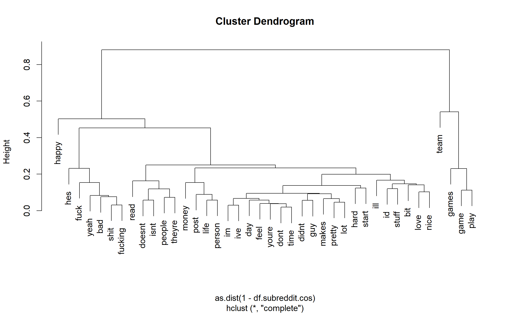

[1] "C:/Users/UrsHu/Documents/Github/Neo4j/Reddit"1 Introduction
1.1 Overview and Motivation
1.1.1 Context and Background
1.1.2 Aim Of The Investigation
1.1.3 Description of the Data
1.1.4 Methodology
1.1.5 Structure of the Report
2 Data
- Sources
- Description
- Wrangling/cleaning
- Spotting mistakes and missing data (could be part of EDA too)
- Listing anomalies and outliers (could be part of EDA too)
setting eval=FALSE will not run the code when knitting the document
2.1 check the CSV
Click to show code
#load csv with here
df <- read.csv(here("data/reddit_comments_15k.csv"))
(head(df, 10))
#> id name link_id parent_id subreddit
#> 1 cnas8zv t1_cnas8zv t3_2qyr1a t3_2qyr1a exmormon
#> 2 cnas8zw t1_cnas8zw t3_2qv6c6 t1_cnas2b6 CanadaPolitics
#> 3 cnas8zx t1_cnas8zx t3_2qxefp t3_2qxefp AdviceAnimals
#> 4 cnas8zy t1_cnas8zy t3_2qys4x t3_2qys4x AdviceAnimals
#> 5 cnas8zz t1_cnas8zz t3_2qm5bi t3_2qm5bi freedonuts
#> 6 cnas900 t1_cnas900 t3_2qxe1p t1_cnaqg2t WTF
#> 7 cnas901 t1_cnas901 t3_2qxlvm t3_2qxlvm needadvice
#> 8 cnas902 t1_cnas902 t3_2qx3kt t1_cnaiy0s summonerschool
#> 9 cnas903 t1_cnas903 t3_2qyizj t1_cnas8bm BostonBruins
#> 10 cnas905 t1_cnas905 t3_2qxiao t1_cnan0ne sausagetalk
#> subreddit_id author author_flair_text
#> 1 t5_2r0gj YoungModern <NA>
#> 2 t5_2s4gt RedCoatsForever Ontario
#> 3 t5_2s7tt vhisic <NA>
#> 4 t5_2s7tt [deleted] <NA>
#> 5 t5_2y51u Mastersimpson <NA>
#> 6 t5_2qh61 BigGupp1 <NA>
#> 7 t5_2r367 PeglegGecko <NA>
#> 8 t5_2t9x3 politevelociraptor <NA>
#> 9 t5_2rmt9 slicked9778 LA Kings fan
#> 10 t5_2t13q jaggazz <NA>
#> body
#> 1 Most of us have some family members like this. *Most* of my family is like this.
#> 2 But Mill's career was way better. Bentham is like, the Joseph Smith to Mill's Brigham Young.
#> 3 Mine uses a strait razor, and as much as i love the clippers i love the razor so much more. Then he follows it up with a warm towel. I think i might go get a hair cut this week.
#> 4 [deleted]
#> 5 Very fast, thank you!
#> 6 The guy is a professional, and very good at what he does. I highly doubt he misses often, if at all.
#> 7 This is a great question, and I want to thank you for asking it. However, I don't have any answers. I'm interested in learning more myself.
#> 8 Is the IE-Shiv-Ghostblade-Zerks-LW-BT Still not the main graves build? 60% crit I think massive Attack speed and decent AD plus Pen?
#> 9 :D.
#> 10 I don't know how to describe it. Gently pinched two spots weiner length apart and just twisted them about 3or 4 times.
#> score created_utc controversiality gilded edited
#> 1 14 2015-01-01 0 0 0
#> 2 3 2015-01-01 0 0 0
#> 3 1 2015-01-01 0 0 0
#> 4 1 2015-01-01 0 0 0
#> 5 2 2015-01-01 0 0 0
#> 6 6 2015-01-01 0 0 0
#> 7 1 2015-01-01 0 0 0
#> 8 1 2015-01-01 0 0 0
#> 9 1 2015-01-01 0 0 0
#> 10 2 2015-01-01 0 0 0
summary(df)
#> id name link_id
#> Length:150000 Length:150000 Length:150000
#> Class :character Class :character Class :character
#> Mode :character Mode :character Mode :character
#>
#>
#>
#> parent_id subreddit subreddit_id
#> Length:150000 Length:150000 Length:150000
#> Class :character Class :character Class :character
#> Mode :character Mode :character Mode :character
#>
#>
#>
#> author author_flair_text body
#> Length:150000 Length:150000 Length:150000
#> Class :character Class :character Class :character
#> Mode :character Mode :character Mode :character
#>
#>
#>
#> score created_utc controversiality gilded
#> Min. :-302 Length:150000 Min. :0 Min. :0.000
#> 1st Qu.: 1 Class :character 1st Qu.:0 1st Qu.:0.000
#> Median : 1 Mode :character Median :0 Median :0.000
#> Mean : 4 Mean :0 Mean :0.001
#> 3rd Qu.: 3 3rd Qu.:0 3rd Qu.:0.000
#> Max. :3967 Max. :0 Max. :2.000
#> edited
#> Min. :0.00e+00
#> 1st Qu.:0.00e+00
#> Median :0.00e+00
#> Mean :3.79e+07
#> 3rd Qu.:0.00e+00
#> Max. :1.43e+092.2 Clean the data
Click to show code
#show column that contains 'deleted'
df[df$body == '[deleted]',]
#remove rows where 'deleted' in body or author
df <- df[!(df$body == '[deleted]' | df$author == '[deleted]'),]
# Remove any series of 'x' characters from the 'body' column
df$body <- gsub("xx+", "", df$body)
df$body <- gsub("XX+", "", df$body)
#show number of rows
nrow(df)
#remove 3 first character of the col parent_id and create a new column
df$parent_id_small <- substr(df$parent_id, 4, nchar(df$parent_id))
#remove weblink
df$body <- gsub("http\\S+", "", df$body)
#remove all quotes or special characters in text fields.
df$body <- gsub("[^[:alnum:][:space:]]", "", df$body)
#show random sample of df
set.seed(123)
df[sample(nrow(df), 1000),]
summary(df)
#save csv as cleaned (a reecrire qd on clean +)
#write.csv(df, here("data/15k_cleaned.csv"), row.names = TRUE)
#create new dataset as csv but without col body
#write.csv(df[, -9], here("data/15k_cleaned_no_body.csv"), row.names = TRUE)For rendering reasons, we load the cleaned dataset. Here is a sample of 20 observations from the dataset. We decided to show only the columns ‘author’ and ‘body’ for the sake of simplicity.
Click to show code
df <- read.csv(here("data/15k_cleaned.csv"))
df.no_body <- read.csv(here("data/15k_cleaned_no_body.csv"))
(head(df.no_body))
#> X id name link_id parent_id subreddit
#> 1 1 cnas8zv t1_cnas8zv t3_2qyr1a t3_2qyr1a exmormon
#> 2 2 cnas8zw t1_cnas8zw t3_2qv6c6 t1_cnas2b6 CanadaPolitics
#> 3 3 cnas8zx t1_cnas8zx t3_2qxefp t3_2qxefp AdviceAnimals
#> 4 5 cnas8zz t1_cnas8zz t3_2qm5bi t3_2qm5bi freedonuts
#> 5 6 cnas900 t1_cnas900 t3_2qxe1p t1_cnaqg2t WTF
#> 6 7 cnas901 t1_cnas901 t3_2qxlvm t3_2qxlvm needadvice
#> subreddit_id author author_flair_text score created_utc
#> 1 t5_2r0gj YoungModern <NA> 14 2015-01-01
#> 2 t5_2s4gt RedCoatsForever Ontario 3 2015-01-01
#> 3 t5_2s7tt vhisic <NA> 1 2015-01-01
#> 4 t5_2y51u Mastersimpson <NA> 2 2015-01-01
#> 5 t5_2qh61 BigGupp1 <NA> 6 2015-01-01
#> 6 t5_2r367 PeglegGecko <NA> 1 2015-01-01
#> controversiality gilded edited parent_id_small
#> 1 0 0 0 2qyr1a
#> 2 0 0 0 cnas2b6
#> 3 0 0 0 2qxefp
#> 4 0 0 0 2qm5bi
#> 5 0 0 0 cnaqg2t
#> 6 0 0 0 2qxlvm
#show only columns 'author' and 'body' with reactable
reactable(
head(df[, c("author", "body")], 20),
searchable = TRUE,
defaultPageSize = 10,
sortable = TRUE,
resizable = TRUE,
highlight = TRUE,
paginationType = "numbers")3 EDA
3.1 Text Mining
3.1.1 A subreddit = A document
Here i take the idea that a ‘document’ is a subreddit. It is like all comments that are part of one subreddit will be a document. It is a bit an analysis per subreddit
Click to show code
#take the df data and group all comments by subreddit
df.subreddit <- df %>%
group_by(subreddit) %>%
summarise(body = paste(body, collapse = " "))
# show number of subreddits
cat("Number of subreddits:", nrow(df.subreddit), "\n")
#> Number of subreddits: 5720
# show top 10 subreddits by length in a bar plot
df.subreddit %>%
mutate(subreddit = reorder(subreddit, nchar(body))) %>%
top_n(10, nchar(body)) %>%
ggplot(aes(x = subreddit, y = nchar(body))) +
geom_col() +
coord_flip() +
labs(title = "Top 10 Subreddits by Length", x = "Subreddit", y = "Length")
# preprocess the text data
df.subreddit.cp <- corpus(df.subreddit$body)
docnames(df.subreddit.cp) <- df.subreddit$subreddit # Assign subreddit names as document identifiers
df.subreddit.tk <- tokens(
df.subreddit.cp,
remove_numbers = TRUE,
remove_punct = TRUE,
remove_symbols = TRUE,
remove_url = TRUE,
remove_hyphens = TRUE,
remove_separators = TRUE
)
#> Warning: remove_hyphens argument is not used.
df.subreddit.tk <- df.subreddit.tk %>%
tokens_tolower() %>%
tokens_remove(stop_words$word) %>%
tokens_remove(c("reddit", "subreddit", "amp", "gt", "deleted", "x+"))
# tf and tf-idf analysis
#tf
df.subreddit.dfm <- dfm(df.subreddit.tk)
tf <- rowSums(t(df.subreddit.dfm))
tf <- data.frame(term = names(tf), count = tf) %>%
tibble() %>%
arrange(desc(count))
#freq per documents
tidy(df.subreddit.dfm) %>%
arrange(desc(count))
#> # A tibble: 774,783 x 3
#> document term count
#> <chr> <chr> <dbl>
#> 1 AskReddit im 1077
#> 2 AskReddit dont 1021
#> 3 AskReddit people 928
#> 4 AskReddit time 627
#> 5 AskReddit youre 536
#> 6 pics gem 512
#> 7 CFB game 459
#> 8 AskReddit post 431
#> 9 leagueoflegends happy 418
#> 10 funny im 406
#> # i 774,773 more rows
#freq per term
df.subreddit.freq <- textstat_frequency(df.subreddit.dfm)
head(df.subreddit.freq,20)
#> feature frequency rank docfreq group
#> 1 im 14268 1 2083 all
#> 2 dont 13376 2 1982 all
#> 3 people 10115 3 1418 all
#> 4 time 8078 4 1606 all
#> 5 youre 6039 5 1314 all
#> 6 game 5438 6 730 all
#> 7 ive 5149 7 1362 all
#> 8 didnt 4122 8 1069 all
#> 9 pretty 4047 9 1161 all
#> 10 lot 3952 10 1136 all
#> 11 doesnt 3917 11 1002 all
#> 12 happy 3520 12 888 all
#> 13 love 3457 13 1028 all
#> 14 feel 3231 14 889 all
#> 15 id 3110 15 1003 all
#> 16 play 3095 16 673 all
#> 17 isnt 3011 17 922 all
#> 18 post 2967 18 844 all
#> 19 shit 2966 19 710 all
#> 20 ill 2965 20 956 all
#plot 20 most frequent words
df.subreddit.freq %>%
top_n(20, frequency) %>%
ggplot(aes(
x = reorder(feature, frequency),
y = frequency)) +
geom_bar(stat = "identity") +
coord_flip() +
xlab("Frequency") +
ylab("term")
textplot_wordcloud(df.subreddit.dfm)
df.subreddit.freq %>%
top_n(20, frequency) %>%
ggplot(aes(label = feature, size = frequency)) +
geom_text_wordcloud() +
scale_size_area(max_size = 20) +
theme_minimal()
#tf-idf
df.subreddit.tfidf <- dfm_tfidf(df.subreddit.dfm)
df.subreddit.tfidf.tidy <- tidy(df.subreddit.tfidf) %>%
bind_tf_idf(term = term, document = document, n = count) %>%
arrange(desc(tf_idf))
head(df.subreddit.tfidf.tidy, n = 20) %>% flextable() %>% autofit()document | term | count | tf | idf | tf_idf |
|---|---|---|---|---|---|
Biloxi | venison | 3.76 | 1 | 8.63 | 8.63 |
CookieCollector | legolegomaster5aolcom | 3.76 | 1 | 8.63 | 8.63 |
DMT | kimjo | 3.76 | 1 | 8.63 | 8.63 |
GermanFacts | tumultuarisch | 3.76 | 1 | 8.63 | 8.63 |
ImaginaryBattlefields | uhhhhhggggg | 3.76 | 1 | 8.63 | 8.63 |
Innie | rmariaryabushkina | 3.76 | 1 | 8.63 | 8.63 |
Markiplier | twofer | 3.76 | 1 | 8.63 | 8.63 |
NSFWskyrim | mcharacter | 3.76 | 1 | 8.63 | 8.63 |
NudeSelfies | chesqin | 3.76 | 1 | 8.63 | 8.63 |
OnHerKnees | redkajira | 3.76 | 1 | 8.63 | 8.63 |
OopsDidntMeanTo | cringefest | 3.76 | 1 | 8.63 | 8.63 |
Pankeks | teeeeeeesssssssstttttttttttt | 3.76 | 1 | 8.63 | 8.63 |
Planes | concord | 3.76 | 1 | 8.63 | 8.63 |
Portuguese | brigado | 3.76 | 1 | 8.63 | 8.63 |
RedditBandits | cjm044 | 3.76 | 1 | 8.63 | 8.63 |
SurrealGifs | endercat | 3.76 | 1 | 8.63 | 8.63 |
Thunder | kevins | 3.76 | 1 | 8.63 | 8.63 |
UniversityofReddit | madkadz | 3.76 | 1 | 8.63 | 8.63 |
UnluckyLuke | thonk | 3.76 | 1 | 8.63 | 8.63 |
UtahValley | ksl | 3.76 | 1 | 8.63 | 8.63 |
Click to show code
#plot per document
df.subreddit.dfm %>%
tidy() %>%
top_n(30, count) %>%
ggplot(aes(x = term, y = count)) +
geom_bar(stat = "identity") +
coord_flip() +
theme(axis.text.y = element_text(size = 6),
axis.ticks.y = element_blank()) +
facet_wrap(~document, ncol = 5)



- We observe that AskReddit has lots of words frequency which makes sense as it is the biggest subreddit by lenght.
- We also observe that the term ‘game’ is associated in term of frequency with sports subreddits like CFB (College Football) and Hockey which makes sense.
- Interestingly the subreddits LoL (League of Legends) is associated with the term ‘happy’, which show us that the community may be the happiest, careful bias here, it is just a word frequency analysis.
- In the subreddits ‘pics’ we observe a lot of ‘gem’ term which indicates treasure or something valuable. This is interesting as it is a subreddit for sharing pictures.
- The subreddits ‘news’ is associated in terms of frequency with the term ‘people’ which is logical as news is about people.
3.1.1.1 Similarity between Subreddits/Documents
we analyze similarities and dissimilarities between the documents (through words) in the data. We use quanteda extensively. We’ll use the objects created previously in the exercises.
Then use the functions textstat_simil() and textstat_dist() to compute the Jaccard index matrix, the cosine matrix, and the Euclidean distances matrix.
Click to show code
#We restrict ourselves to a small subset of the highest tf-idf of the data to avoid memory issues and readability issues in the plots.
df.subreddit.tfidf.small <- df.subreddit.tfidf[1:50,]
df.subreddit.tfidf.small
#> Document-feature matrix of: 50 documents, 112,769 features (99.92% sparse) and 0 docvars.
#> features
#> docs straight adjustment cpi cash jewelry measurement
#> 100yearsago 1.32 2.55 3.46 1.67 5.36 2.48
#> 1200isplenty 0 0 0 0 0 0
#> 121stSquadron 0 0 0 0 0 0
#> 1911 0 0 0 0 0 0
#> 2000sMusic 0 0 0 0 0 0
#> 2007scape 0 0 0 6.70 0 0
#> features
#> docs changing price gold letters
#> 100yearsago 1.51 1.2 1.44 1.97
#> 1200isplenty 0 0 0 0
#> 121stSquadron 0 0 0 0
#> 1911 0 0 0 0
#> 2000sMusic 0 0 0 0
#> 2007scape 0 1.2 4.31 0
#> [ reached max_ndoc ... 44 more documents, reached max_nfeat ... 112,759 more features ]
df.subreddit.jac <- textstat_simil(
df.subreddit.tfidf.small, method = "jaccard", margin = "documents")
df.subreddit.cos <- textstat_simil(
df.subreddit.tfidf.small, method = "cosine", margin = "documents")
df.subreddit.eucl <- textstat_dist(
df.subreddit.tfidf.small, method = "euclidean", margin = "documents")
#heatmap representation of similariteis between subreddits
## jaccard
df.subreddit.jac.mat <- melt(as.matrix(df.subreddit.jac))
ggplot( data = df.subreddit.jac.mat,
mapping = aes(x = Var1, y = Var2, fill = value)) +
scale_fill_gradient2(
low = "blue",
high = "red",
mid = 'white',
midpoint = 0.5,
limit = c(0,1),
name = "Jaccard") +
geom_tile() + xlab("") + ylab("") +
#incline x-axis labels
theme(axis.text.x = element_text(angle = 45, hjust = 1))
## cosine
df.subreddit.cos.mat <- melt(as.matrix(df.subreddit.cos))
ggplot( data = df.subreddit.cos.mat,
mapping = aes(x = Var1, y = Var2, fill = value)) +
scale_fill_gradient2(
low = "blue",
high = "red",
mid = 'white',
midpoint = 0.5,
limit = c(0,1),
name = "Cosine") +
geom_tile() + xlab("") + ylab("") +
#incline x-axis labels
theme(axis.text.x = element_text(angle = 45, hjust = 1))
## euclidean
df.subreddit.eucl.mat <- melt(as.matrix(df.subreddit.eucl))
ggplot( data = df.subreddit.eucl.mat,
mapping = aes(x = Var1, y = Var2, fill = value)) +
scale_fill_gradient2(
low = "blue",
high = "red",
mid = 'white',
midpoint = 0.5,
limit = c(0,1),
name = "Euclidean") +
geom_tile() + xlab("") + ylab("") +
#incline x-axis labels
theme(axis.text.x = element_text(angle = 45, hjust = 1))


3.1.1.2 Clustering of Documents
Hierarchical clustering and K-means. The first one is applied on the dissimilarities (Euclidean, inverted Jaccard, and inverted cosine). The second one is applied on the features, here, TF-IDF. To illustrate the methods, we decide to create five clusters.
Click to show code
#hierarchical
df.subreddit.hc <- hclust(as.dist(df.subreddit.eucl))
## df.subreddit.hc <- hclust(as.dist(1 - df.subreddit.jac)) # use this line for Jaccard
## df.subreddit.hc <- hclust(as.dist(1 - df.subreddit.cos)) # use this line for Cosine
plot(df.subreddit.hc)
df.subreddit.clust <- cutree(df.subreddit.hc, k = 3)
df.subreddit.clust
#> 100yearsago 1200isplenty 121stSquadron
#> 1 1 1
#> 1911 2000sMusic 2007scape
#> 1 1 2
#> 2019 240sx 24hoursofuhc
#> 1 1 1
#> 24hoursupport 2X_INTJ 2spooky4me
#> 1 1 1
#> 30ROCK 311 316cats
#> 1 1 1
#> 321 3DS 3DSPH
#> 1 1 1
#> 3DSdeals 3Dmodeling 3Dprinting
#> 1 1 1
#> 3amjokes 3d6 3dsFCswap
#> 1 1 1
#> 3dsmax 40kLore 49ers
#> 1 1 3
#> 4ChanMeta 4Runner 4Xgaming
#> 1 1 1
#> 4chan 4hourbodyslowcarb 4skinjokes
#> 1 1 1
#> 4x4 52book 52weeksofbaking
#> 1 1 1
#> 52weeksofcooking 5555555 5by5DLC
#> 1 1 1
#> 5nafcirclejerk 60fpsporn 641stworldproblems
#> 1 1 1
#> 7daystodie 80s 8BallMC
#> 1 1 1
#> 8chan 911truth 9gag
#> 1 1 1
#> A858DE45F56D9BC9 ABCDesis
#> 1 1
#k-means
df.subreddit.km <- kmeans(df.subreddit.tfidf.small, centers = 3)
df.subreddit.km$cluster
#> 100yearsago 1200isplenty 121stSquadron
#> 2 2 2
#> 1911 2000sMusic 2007scape
#> 2 2 3
#> 2019 240sx 24hoursofuhc
#> 2 2 2
#> 24hoursupport 2X_INTJ 2spooky4me
#> 2 2 2
#> 30ROCK 311 316cats
#> 2 2 2
#> 321 3DS 3DSPH
#> 2 2 2
#> 3DSdeals 3Dmodeling 3Dprinting
#> 2 2 2
#> 3amjokes 3d6 3dsFCswap
#> 2 2 2
#> 3dsmax 40kLore 49ers
#> 2 2 1
#> 4ChanMeta 4Runner 4Xgaming
#> 2 2 2
#> 4chan 4hourbodyslowcarb 4skinjokes
#> 2 2 2
#> 4x4 52book 52weeksofbaking
#> 2 2 2
#> 52weeksofcooking 5555555 5by5DLC
#> 2 2 2
#> 5nafcirclejerk 60fpsporn 641stworldproblems
#> 2 2 2
#> 7daystodie 80s 8BallMC
#> 2 2 2
#> 8chan 911truth 9gag
#> 2 2 2
#> A858DE45F56D9BC9 ABCDesis
#> 2 2
3.1.1.3 Similarities between words
In this part we analyze similarities between words (through documents). We restrict ourselves to a subset corresponding to words with frequency rank less than 40 (it should correspond to the 40 most frequent words but several words have the same frequency rank). We use the cosine similarity and plot the heatmap.
Click to show code
df.subreddit.freq <- textstat_frequency(df.subreddit.dfm) %>%
filter(rank <= 40)
df.subreddit.freq$feature
#> [1] "im" "dont" "people" "time" "youre" "game"
#> [7] "ive" "didnt" "pretty" "lot" "doesnt" "happy"
#> [13] "love" "feel" "id" "play" "isnt" "post"
#> [19] "shit" "ill" "day" "yeah" "bad" "hes"
#> [25] "life" "fuck" "games" "theyre" "guy" "makes"
#> [31] "nice" "team" "fucking" "hard" "money" "bit"
#> [37] "person" "start" "read" "stuff"
df.subreddit.cos <- textstat_simil(
df.subreddit.dfm[, df.subreddit.freq$feature],
method = "cosine",
margin = "feature")
df.subreddit.cos.mat <- melt(as.matrix(df.subreddit.cos)) # Convert the object to matrix then to data frame
ggplot(data = df.subreddit.cos.mat, aes(x=Var1, y=Var2, fill=value)) +
scale_fill_gradient2(
low = "blue",
high = "red",
mid = "white",
midpoint = 0.5,
limit = c(0, 1),
name = "Cosine") +
geom_tile() +
theme(
axis.text.x = element_text(angle = 45, hjust = 1, size = 5),
axis.text.y = element_text(size = 5)) +
xlab("") +
ylab("")
Lots of words are similar in terms of cosine similarity. this is peculiar which means that they are used in a similar proportion through subreddits.
3.1.1.4 Clustering Words
Click to show code
#cluster and rotate labels
df.subreddit.hc <- hclust(as.dist(1 - df.subreddit.cos))
plot(df.subreddit.hc)
3.1.1.5 Test topic extracted
Click to show code
# Preprocess the text in the body column
df.subreddit_clean <- df.subreddit %>%
mutate(body = tolower(body)) %>%
mutate(body = removePunctuation(body)) %>%
mutate(body = removeNumbers(body))
# Tokenize words and remove common stop words
df_words <- df.subreddit_clean %>%
unnest_tokens(word, body) %>%
anti_join(stop_words) # Remove common stop words like "the", "is", etc.
# Count the most frequent words
word_counts <- df_words %>%
count(word, sort = TRUE)
# Display the top 20 most common words
head(word_counts, 20)
#> # A tibble: 20 x 2
#> word n
#> <chr> <int>
#> 1 im 14270
#> 2 dont 13377
#> 3 people 10115
#> 4 time 8079
#> 5 youre 6039
#> 6 game 5439
#> 7 ive 5150
#> 8 didnt 4122
#> 9 pretty 4049
#> 10 lot 3952
#> 11 doesnt 3917
#> 12 gt 3593
#> 13 happy 3520
#> 14 love 3457
#> 15 feel 3231
#> 16 id 3113
#> 17 play 3095
#> 18 isnt 3011
#> 19 post 2969
#> 20 shit 2966Click to show code
# Load necessary libraries
library(dplyr)
library(tidytext)
library(tidyr)
# Preprocess the text data
df.subreddit_clean <- df.subreddit %>%
mutate(body = tolower(body)) %>%
mutate(body = removePunctuation(body)) %>%
mutate(body = removeNumbers(body))
# Tokenize the text, remove stopwords
df_words <- df.subreddit_clean %>%
unnest_tokens(word, body) %>%
anti_join(stop_words) # Remove common stopwords
# Count word occurrences per subreddit
df_word_count <- df_words %>%
count(subreddit, word, sort = TRUE)
# Concatenate the words and their counts into a single string for each subreddit
df_combined <- df_word_count %>%
group_by(subreddit) %>%
summarise(
words = paste(word, collapse = ", "), # Concatenate words with commas
word_count = paste(n, collapse = ", ") # Concatenate word counts
) %>%
ungroup()
# Display the results
print(df_combined)
#> # A tibble: 5,618 x 3
#> subreddit words word_count
#> <chr> <chr> <chr>
#> 1 100yearsago jewelry, adjustment, cash, changing, cpi~ 2, 1, 1, ~
#> 2 1200isplenty spinach, avoid, diet, drink, drunk, add,~ 3, 2, 2, ~
#> 3 121stSquadron add, happy, ill, morn 1, 1, 1, 1
#> 4 1911 fair 1
#> 5 2000sMusic audio, version 1, 1
#> 6 2007scape osrs, rs, dont, im, jagex, youre, play, ~ 36, 31, 2~
#> 7 2019 banter 1
#> 8 240sx bank, bill, block, cams, forged, gently,~ 1, 1, 1, ~
#> 9 24hoursofuhc achievements, hard, list, moderate, side~ 1, 1, 1, ~
#> 10 24hoursupport bracket, drive, drives, hard, windows, c~ 3, 3, 3, ~
#> # i 5,608 more rows3.1.2 Attempt 4 - Topic Modelling per subrreddit
3.1.2.1 LSA
Click to show code
#select subset of data of the top 10 subreddits for readability purposes
df.top10_subreddit <- df.subreddit %>%
arrange(desc(nchar(body))) %>%
filter(row_number() <= 10)
#corpus
df.top10_subreddit.cp <- corpus(df.top10_subreddit$body)
# Assign subreddit names as document identifiers
docnames(df.top10_subreddit.cp) <- df.top10_subreddit$subreddit
#token
df.top10_subreddit.tk <- tokens(
corpus(df.top10_subreddit$body),
remove_numbers = TRUE,
remove_punct = TRUE,
remove_symbols = TRUE,
remove_url = TRUE,
remove_hyphens = TRUE,
remove_separators = TRUE
)
#> Warning: remove_hyphens argument is not used.
df.top10_subreddit.tk <- df.top10_subreddit.tk %>%
tokens_tolower() %>%
tokens_remove(stop_words$word) %>%
tokens_remove(c("reddit", "subreddit", "amp", "gt", "deleted", "x+")) %>%
tokens_replace(
pattern = hash_lemmas$token,
replacement = hash_lemmas$lemma)
# Create Document-Feature Matrix (DFM)
df.top10_subreddit.dfm <- dfm(df.top10_subreddit.tk)
# Explicitly set document names in the DFM to the subreddit names
docnames(df.top10_subreddit.dfm) <- df.top10_subreddit$subreddit
df.top10_subreddit.dfm
#> Document-feature matrix of: 10 documents, 25,190 features (79.08% sparse) and 0 docvars.
#> features
#> docs roofer people job site savage rock power
#> AskReddit 1 950 229 32 2 22 56
#> funny 0 189 27 7 0 13 27
#> CFB 0 70 23 8 0 3 5
#> pcmasterrace 0 123 19 9 1 6 49
#> leagueoflegends 0 152 13 5 0 2 45
#> hockey 0 31 12 0 0 8 32
#> features
#> docs grandfather germany ship
#> AskReddit 33 13 24
#> funny 0 3 4
#> CFB 1 0 0
#> pcmasterrace 0 2 13
#> leagueoflegends 1 1 7
#> hockey 0 9 1
#> [ reached max_ndoc ... 4 more documents, reached max_nfeat ... 25,180 more features ]
#use textmodel_lsa() on dfm using n dimensions
df.subreddit.lsa <- textmodel_lsa(
x = df.top10_subreddit.dfm,
nd = 5)
head(df.subreddit.lsa$docs)
#> [,1] [,2] [,3] [,4] [,5]
#> AskReddit -0.898 0.3216 0.0973 0.14355 -0.1405
#> funny -0.199 -0.0296 -0.0740 0.07925 0.1465
#> CFB -0.182 -0.7233 0.4034 0.04633 0.0291
#> pcmasterrace -0.163 -0.2822 -0.7984 0.00462 -0.0263
#> leagueoflegends -0.153 -0.3193 -0.3172 -0.32432 -0.3036
#> hockey -0.156 -0.4299 0.1903 0.10164 0.0789
#interpretation
## we look at the five terms with the largest values and the five ones with the lowest value (i.e., largest negative value)
n.terms <- 5
##for dim 2
w.order <- sort(df.subreddit.lsa$features[, 2], decreasing = TRUE)
w.top2 <- c(w.order[1:n.terms], rev(rev(w.order)[1:n.terms]))
##for dim 3
w.order <- sort(df.subreddit.lsa$features[, 3], decreasing = TRUE)
w.top3 <- c(w.order[1:n.terms], rev(rev(w.order)[1:n.terms]))
w.top2
#> people question post friend life win fuck
#> 0.1511 0.1346 0.1174 0.0977 0.0733 -0.1417 -0.1793
#> team play game
#> -0.2862 -0.2991 -0.5395
w.top3
#> fuck team call bowl boise steam awesome card
#> 0.1837 0.1602 0.1255 0.1155 0.0894 -0.1784 -0.2124 -0.2553
#> pc happy
#> -0.2608 -0.3145Topic 2 is associated positively with topic like (game, team, play, games, fuck, ) and negatively with topics like (questions, question, comments, post, people)
Click to show code
#PCA bibplots for links between topics and documents and topcis with terms
w.subset <-
##restric chart to terms that are mostly related to dim2 and dim3 so w.top2 and w.top3
df.subreddit.lsa$features[
c(unique(c(names(w.top2), names(w.top3)))), 2:3]
biplot(
y = df.subreddit.lsa$docs[, 2:3],
x = df.subreddit.lsa$features[,2:3],
col = c("black","red"),
cex = c(0.5, 0.5),
xlab = "Dim 2",
ylab = "Dim 3")
We observe that the word fuck is associated with dim 3 and is interestingly negatively associated to happy which makes sense.
3.1.2.2 LDA
Click to show code
docnames(df.top10_subreddit.dfm) <- df.top10_subreddit$subreddit
set.seed(1234) #To create reproducible results
df.top10_subbredit.lda <- textmodel_lda(
x = df.top10_subreddit.dfm,
k = 10)
#extract top 5 terms per topic
seededlda::terms(df.top10_subbredit.lda, 5)
#> topic1 topic2 topic3 topic4 topic5 topic6
#> [1,] "happy" "gem" "game" "game" "im" "question"
#> [2,] "play" "weight" "fuck" "team" "do" "post"
#> [3,] "game" "snow" "team" "play" "people" "moderator"
#> [4,] "server" "heat" "goal" "bowl" "time" "concern"
#> [5,] "team" "eat" "play" "fuck" "youre" "automatically"
#> topic7 topic8 topic9 topic10
#> [1,] "jay" "game" "police" "country"
#> [2,] "adnan" "pc" "cop" "russia"
#> [3,] "story" "card" "law" "american"
#> [4,] "interview" "awesome" "people" "government"
#> [5,] "lie" "steam" "gun" "oil"
# Extract subreddits per topic and rename output to match subreddit names
top_subreddits <- seededlda::topics(df.top10_subbredit.lda)
names(top_subreddits) <- df.top10_subreddit$subreddit
top_subreddits
#> AskReddit funny CFB pcmasterrace
#> topic5 topic5 topic4 topic8
#> leagueoflegends hockey news worldnews
#> topic1 topic3 topic5 topic10
#> serialpodcast pics
#> topic7 topic5
#> 10 Levels: topic1 topic2 topic3 topic4 topic5 topic6 ... topic10
#count the number of documents per topic
seededlda::topics(df.top10_subbredit.lda) %>% table()
#> .
#> topic1 topic2 topic3 topic4 topic5 topic6 topic7 topic8
#> 1 0 1 1 4 0 1 1
#> topic9 topic10
#> 0 1Topic 8 with 3 subreddits ( AskReddit, funny and news) is the most popular topic with words like people, time, fuck, day, feel which may represent human experience and emotions. They touch on aspects of daily life, feelings, and the passage of time, with a bit of raw expression thrown in. It’s a mix of the mundane and the profound, capturing the essence of what it means to be human. Indeed, what reddit is about haha
3.1.2.3 Topic-term Analysis
Click to show code
#transform into a long df
phi.long <- melt(
df.top10_subbredit.lda$phi,
varnames = c("Topic", "Term"),
value.name = "Phi")
#plot 10 largest prob terms within each subject
phi.long %>%
group_by(Topic) %>%
top_n(10, Phi) %>%
ggplot(aes(reorder_within(Term, Phi, Topic), Phi)) +
geom_col(show.legend = FALSE) +
coord_flip() +
facet_wrap(~ Topic, scales = "free_y") +
scale_x_reordered() +
xlab("Term") +
theme(
axis.text.y = element_text(size = 5),
strip.text = element_text(size = 5))
Similar analysis as the to the previous but now we see the probs so more precise
But we observe that lots of topics have the same terms. Therefore, adjusting k topics may be necessary.
We try with 7 topics
Click to show code
docnames(df.top10_subreddit.dfm) <- df.top10_subreddit$subreddit
set.seed(1234) #To create reproducible results
df.top10_subbredit.lda <- textmodel_lda(
x = df.top10_subreddit.dfm,
k = 7)
#extract top 5 terms per topic
seededlda::terms(df.top10_subbredit.lda, 5)
#> topic1 topic2 topic3 topic4 topic5 topic6
#> [1,] "happy" "gem" "game" "im" "jay" "question"
#> [2,] "game" "weight" "team" "do" "people" "post"
#> [3,] "play" "snow" "play" "people" "police" "moderator"
#> [4,] "pc" "lose" "bowl" "time" "adnan" "automatically"
#> [5,] "card" "op" "fuck" "youre" "cop" "concern"
#> topic7
#> [1,] "game"
#> [2,] "fuck"
#> [3,] "team"
#> [4,] "goal"
#> [5,] "play"
# Extract subreddits per topic and rename output to match subreddit names
top_subreddits <- seededlda::topics(df.top10_subbredit.lda)
names(top_subreddits) <- df.top10_subreddit$subreddit
top_subreddits
#> AskReddit funny CFB pcmasterrace
#> topic4 topic4 topic3 topic1
#> leagueoflegends hockey news worldnews
#> topic1 topic7 topic4 topic5
#> serialpodcast pics
#> topic5 topic4
#> Levels: topic1 topic2 topic3 topic4 topic5 topic6 topic7
#count the number of documents per topic
seededlda::topics(df.top10_subbredit.lda) %>% table()
#> .
#> topic1 topic2 topic3 topic4 topic5 topic6 topic7
#> 2 0 1 4 2 0 1
#transform into a long df
phi.long <- melt(
df.top10_subbredit.lda$phi,
varnames = c("Topic", "Term"),
value.name = "Phi")
#plot 10 largest prob terms within each subject
phi.long %>%
group_by(Topic) %>%
top_n(10, Phi) %>%
ggplot(aes(reorder_within(Term, Phi, Topic), Phi)) +
geom_col(show.legend = FALSE) +
coord_flip() +
facet_wrap(~ Topic, scales = "free_y") +
scale_x_reordered() +
xlab("Term") +
theme(
axis.text.y = element_text(size = 5),
strip.text = element_text(size = 5))
the distinction between topics is more clear now. We observe that topic1 may be related to ‘hockey’ and topic 2 to ‘CFB’ both sports so they have similar words expect specific ones. Topic 3 might more be related to ‘news’ as it has words like link (to refer to a source), interview, story, murder. Topic 4 is more related to feelings with words like time, day, feel, shit, pretty,… but harder to distinguish. Topic 5 might be related to government, nations or world maybe ? with words like police, american, russia, war, country. Topic 6 might well be a question topic with words like comment, contact,…. And topic 7 might more be a PC or PC gaming type of topic with words like game, steam, ram, build. we see that they reflect our subreddit which makes sense, now it would be interesting to take more that 10 subreddit as we might have a interesting regrouping of subreddits.
3.1.2.4 Topic document Analysis
Click to show code
set.seed(1234)
theta.long <- melt(
df.top10_subbredit.lda$theta,
varnames = c("Doc", "Topic"),
value.name = "Theta")
# Ensure `theta.long` has the same document order as `df.top10_subreddit`
theta.long$Doc <- rep(df.top10_subreddit$subreddit, each = ncol(df.top10_subreddit.dfm$theta))
#> Warning in rep(df.top10_subreddit$subreddit, each =
#> ncol(df.top10_subreddit.dfm$theta)): first element used of 'each'
#> argument
theta.long %>%
group_by(Topic) %>%
top_n(10, Theta) %>%
ggplot(aes(reorder_within(Doc, Theta, Topic), Theta)) +
geom_col(show.legend = FALSE) +
coord_flip()+
facet_wrap(~ Topic, scales = "free_y") +
scale_x_reordered() +
xlab("Document") +
theme(
axis.text.y = element_text(size = 5),
strip.text = element_text(size = 5))
This confirms my previous analysis. we see topic one related to hockey, topic 2 related to CFB but interestingly lol is also here. Topic 3 was in fact reports, topic 4 was indeed feelings as it encompass a large range of subreddits. Topic 5 was indeed related to world news, news in general, topic 6 was indeed questions and topic 7 was indeed PC.
3.1.2.5 LDA diagnostics
Click to show code
#topic prevalence
rev(sort(colSums(df.top10_subbredit.lda$theta)/sum(df.top10_subbredit.lda$theta)))
#> topic4 topic5 topic1 topic2 topic3 topic7 topic6
#> 0.4968 0.1653 0.1103 0.0675 0.0647 0.0624 0.0329Topic 4 most prevalent.
Click to show code
#using topicmodels
df.top10_subbredit.LDA <- LDA(
convert(df.top10_subreddit.dfm, to = "topicmodels"),
k = 7
)
topicmodels::terms(df.top10_subbredit.LDA, 5)
#> Topic 1 Topic 2 Topic 3 Topic 4 Topic 5 Topic 6 Topic 7
#> [1,] "people" "game" "im" "gem" "game" "happy" "people"
#> [2,] "do" "play" "do" "im" "im" "play" "question"
#> [3,] "police" "team" "youre" "people" "fuck" "game" "do"
#> [4,] "cop" "fuck" "time" "do" "do" "do" "didnt"
#> [5,] "im" "bowl" "friend" "time" "play" "im" "time"
topicmodels::topics(df.top10_subbredit.LDA)
#> AskReddit funny CFB pcmasterrace
#> 3 4 2 5
#> leagueoflegends hockey news worldnews
#> 6 5 1 1
#> serialpodcast pics
#> 7 4
topicmodels::topics(df.top10_subbredit.LDA) %>% table()
#> .
#> 1 2 3 4 5 6 7
#> 2 1 1 2 2 1 1
topic_diagnostics(
topic_model = df.top10_subbredit.LDA,
dtm_data = convert(df.top10_subreddit.dfm, to = "topicmodels"))
#> topic_num topic_size mean_token_length dist_from_corpus tf_df_dist
#> 1 1 3268 4.3 0.455 73.5
#> 2 2 2236 3.6 0.512 73.9
#> 3 3 1647 3.8 0.398 74.0
#> 4 4 3690 3.7 0.430 79.1
#> 5 5 4581 3.8 0.432 75.7
#> 6 6 2319 4.1 0.514 77.6
#> 7 7 7449 4.5 0.414 76.1
#> doc_prominence topic_coherence topic_exclusivity
#> 1 2 3.72 9.16
#> 2 1 -3.34 9.49
#> 3 2 7.72 9.53
#> 4 2 9.45 8.93
#> 5 2 2.56 8.83
#> 6 1 -6.34 9.42
#> 7 2 3.65 8.10Click to show code
#reproduce term-topic analysis with this package
beta.long <- tidy(
df.top10_subbredit.LDA,
matrix = "beta") # equivalent to melt (with this package)
beta.long %>%
group_by(topic) %>%
top_n(10, beta) %>%
ggplot(aes(reorder_within(term, beta, topic), beta)) +
geom_col(show.legend = FALSE) +
coord_flip()+
facet_wrap(~ topic, scales = "free_y") +
scale_x_reordered() +
xlab("Term") +
theme(
axis.text.y = element_text(size = 5),
axis.text.x = element_text(size = 5),
strip.text = element_text(size = 5))
3.1.3 Attempt 6 - Sentiment Analysis
3.1.3.1 AFINN
assgin sentiment score by word through the use of the inner joins
Click to show code
#get top 50 subreddits
df.top50_subreddit <- df.subreddit %>%
arrange(desc(nchar(body))) %>%
filter(row_number() <= 50)
df.top50_subreddit.tokens <- df.top50_subreddit %>% unnest_tokens(word, body)
df.top50_subreddit.tokens
#> # A tibble: 1,479,178 x 2
#> subreddit word
#> <chr> <chr>
#> 1 AskReddit roofers
#> 2 AskReddit the
#> 3 AskReddit only
#> 4 AskReddit people
#> 5 AskReddit on
#> 6 AskReddit a
#> 7 AskReddit job
#> 8 AskReddit site
#> 9 AskReddit more
#> 10 AskReddit savage
#> # i 1,479,168 more rows
df.top50_subreddit.affin <- inner_join(df.top50_subreddit.tokens, get_sentiments("afinn"),
by = c("word" = "word")) %>% group_by(subreddit) %>%
summarize(Sentiment = mean(value)) %>% ungroup()
ggplot(df.top50_subreddit.affin, aes(x = Sentiment, y = reorder(subreddit, Sentiment))) + geom_col() + ylab("")

there seems to be more positive subreddits than negative ones.
We interestingly observe that based on the affin dictionnary the news and politics subreddit are the most negative, which could reflect a state of the world. And the pcmasterrace is the most positive, by far.
3.1.3.2 NRC
Click to show code
df.top50_subreddit.nrc <- inner_join(df.top50_subreddit.tokens, get_sentiments("nrc"),
by = c("word" = "word")) %>% group_by(subreddit, sentiment) %>%
summarize(n = n()) %>% spread(sentiment, n, fill = 0) %>%
mutate(Sentiment = positive - negative) %>% select(subreddit, Sentiment)
#> Warning in inner_join(df.top50_subreddit.tokens, get_sentiments("nrc"), : Detected an unexpected many-to-many relationship between `x` and
#> `y`.
#> i Row 10 of `x` matches multiple rows in `y`.
#> i Row 987 of `y` matches multiple rows in `x`.
#> i If a many-to-many relationship is expected, set `relationship =
#> "many-to-many"` to silence this warning.
ggplot(df.top50_subreddit.nrc, aes(x = Sentiment, y = reorder(subreddit, Sentiment))) + geom_col() + ylab("")
Through the NRC dictionnary we observe far mor positive subreddits than negative ones. This difference could be explain by the fact that the NRC dictionnary is more balanced than the AFINN dictionnary ?
We still observe quite the same patterns though.
3.1.3.3 BING
Click to show code
df.top50_subreddit.bing <- inner_join(df.top50_subreddit.tokens, get_sentiments("bing"),
by = c("word" = "word")) %>% group_by(subreddit, sentiment) %>%
summarize(n = n()) %>% spread(sentiment, n, fill = 0) %>%
mutate(Sentiment = positive - negative) %>% select(subreddit, Sentiment)
#> Warning in inner_join(df.top50_subreddit.tokens, get_sentiments("bing"), : Detected an unexpected many-to-many relationship between `x` and
#> `y`.
#> i Row 87436 of `x` matches multiple rows in `y`.
#> i Row 1503 of `y` matches multiple rows in `x`.
#> i If a many-to-many relationship is expected, set `relationship =
#> "many-to-many"` to silence this warning.
ggplot(df.top50_subreddit.bing, aes(x = Sentiment, y = reorder(subreddit, Sentiment))) + geom_col() + ylab("")
BING seems to have a bit the same proporiton of positive and negative as the AFINN dictionnary. As the BING dictionnary combines both positive and negative words, it may be more balanced than the AFINN dictionnary,which could indicate that the NRC is more biased towards positive words.
3.1.3.4 Sentiment by words in comment
Click to show code
#count number of rows in df
nrow(df)
#> [1] 138070
#use bing to analyse sentiment all the rows based on column body
df.sentiment <- inner_join(df %>% unnest_tokens(word, body),
get_sentiments("bing"), by = c("word" = "word")) %>% group_by(id, sentiment = sentiment) %>%
summarize(n = n()) %>% spread(sentiment, n, fill = 0) %>% mutate(Sentiment = positive - negative) %>%
select(id, Sentiment) %>% inner_join(df, by = "id")
#> Warning in inner_join(df %>% unnest_tokens(word, body), get_sentiments("bing"), : Detected an unexpected many-to-many relationship between `x` and
#> `y`.
#> i Row 890084 of `x` matches multiple rows in `y`.
#> i Row 3805 of `y` matches multiple rows in `x`.
#> i If a many-to-many relationship is expected, set `relationship =
#> "many-to-many"` to silence this warning.
#save the data without body
# write.csv(df.sentiment %>% select(-body), here("data/reddit_comments_15k_cleaned_NOBODY.csv"), row.names = TRUE)
ggplot(df.sentiment, aes(x = Sentiment, y = score)) + geom_point() + geom_smooth(method = "lm") + xlab("Sentiment") + ylab("Score")
There seem to be two outliers in this plot, let’s examine them
Click to show code
df.sentiment %>% filter(Sentiment > 100)
#> # A tibble: 2 x 17
#> # Groups: id [2]
#> id Sentiment X name link_id parent_id subreddit
#> <chr> <dbl> <int> <chr> <chr> <chr> <chr>
#> 1 cnatcvn 399 50850 t1_cnatcvn t3_2qyor1 t3_2qyor1 leagueofle~
#> 2 cnavafj 511 140059 t1_cnavafj t3_2qxkxz t3_2qxkxz pics
#> # i 10 more variables: subreddit_id <chr>, author <chr>,
#> # author_flair_text <chr>, body <chr>, score <int>,
#> # created_utc <chr>, controversiality <int>, gilded <int>,
#> # edited <int>, parent_id_small <chr>They seem to be due to the fact that one comment just said ‘happy new year’ over and over. And the other one just put ‘GEM’ over and over. This is why the sentiment is so high, as both represent highl positive words and they are repeated a lot.
3.1.3.5 Correlation sentiment - score
Click to show code
# assess correlation between sentiment and score
cor.test(df.sentiment$Sentiment, df.sentiment$score)
#>
#> Pearson's product-moment correlation
#>
#> data: df.sentiment$Sentiment and df.sentiment$score
#> t = -3, df = 90459, p-value = 0.008
#> alternative hypothesis: true correlation is not equal to 0
#> 95 percent confidence interval:
#> -0.0153 -0.0023
#> sample estimates:
#> cor
#> -0.00881There seems to be no relation between sentiment and score
Click to show code
#numbers of rows in df.sentiment
nrow(df.sentiment)
#> [1] 904613.1.3.6 create a new column sentiment based on the sentiment score of a comment
Click to show code
## create a small dataset for testing purpose
df.small <- df %>% sample_n(10)
#create a new column sentiment
df.small$sentiment <- NA
## Start timing the entire loop
total_start_time <- Sys.time()
## create a for loop
for (i in 1:nrow(df.small)) {
# Start timing this comment
comment_start_time <- Sys.time()
# show the comment
cat("Comment:", df.small$body[i], "\n")
# tokenize the comment, remove stopwords, ect
tokens <- df.small$body[i] %>%
tokens(remove_punct = TRUE, remove_numbers = TRUE, remove_symbols = TRUE,
remove_url = TRUE, remove_separators = TRUE) %>%
tokens_tolower() %>%
tokens_remove(stop_words$word) %>%
tokens_remove(c("reddit", "subreddit", "amp", "gt", "deleted", "xx+")) %>%
tokens_replace(
pattern = hash_lemmas$token,
replacement = hash_lemmas$lemma)
# show error if character or not
if (!is.character(tokens)) {
tokens <- as.character(tokens)
}
#create a list of tokens
tokens <- as.list(tokens)
#Sentiment Analysis
## create a list to store the sentiment score
sentiment_score <- list()
## loop through the tokens list
for (j in 1:length(tokens)) {
# get the sentiment score of the token using bing lexicon
token_sentiment <- get_sentiments("bing") %>%
filter(word == tokens[[j]]) %>%
pull(sentiment)
# if token is found in lexicon, store its sentiment
# if not found, assign "neutral"
if (length(token_sentiment) > 0) {
sentiment_score[[j]] <- token_sentiment
} else {
sentiment_score[[j]] <- "neutral"
}
}
## calculate the overall sentiment
# count the number of each sentiment
n_positive <- sum(unlist(sentiment_score) == "positive")
n_negative <- sum(unlist(sentiment_score) == "negative")
# determine final sentiment
if (n_positive > n_negative) {
df.small$sentiment[i] <- "positive"
} else if (n_negative > n_positive) {
df.small$sentiment[i] <- "negative"
} else {
df.small$sentiment[i] <- "neutral"
}
#show sentiment of the comment
cat("Sentiment of Comment", i, ":", df.small$sentiment[i], "\n")
# Calculate and display time taken for this comment
comment_end_time <- Sys.time()
comment_time <- difftime(comment_end_time, comment_start_time, units = "secs")
#show a message for completed comment
cat("Comment", i, "completed\n")
}
#> Comment: Why did the chicken cross the road It didnt HHAHHAHAHAHHAHAHHA sorry that wasnt funny 472
#> Sentiment of Comment 1 : negative
#> Comment 1 completed
#> Comment: i just hope for someone to say that it was on the list or something basically you have to restart so often and everytime that is the most annoying part together with me being too OCD and disliking the level 101 201 etc that all of my chars have but thats just me
#> Sentiment of Comment 2 : negative
#> Comment 2 completed
#> Comment: It only opens Neweggs home page what is it called
#> Sentiment of Comment 3 : neutral
#> Comment 3 completed
#> Comment: Time for them to rack up more points
#> Sentiment of Comment 4 : neutral
#> Comment 4 completed
#> Comment: is there a joke in the poster that Im missing
#> Sentiment of Comment 5 : negative
#> Comment 5 completed
#> Comment: You could perhaps invest in decent ultralight gear and carry her gear for her Get a small 14l daypack for her personal items fleece snacks and water and hump the rest Had to do this last year when my wife decided her 25l pack was too heavy and I had to carry both of our packs the last five miles
#> Sentiment of Comment 6 : positive
#> Comment 6 completed
#> Comment: added to discuss
#> Sentiment of Comment 7 : neutral
#> Comment 7 completed
#> Comment: QuestionsAnswers Blog Name Tumblrdaremaster Tumblr Tagssubmission ampnbsphiskiiten ampnbsplingerie ampnbspDs ampnbspdominant ampnbspsubmissive ampnbspmaster ampnbspbdsm ampnbspddlg ampnbspkinky ampnbspds ampnbspds relationship relationship ampnbsp GoogleImage search TinEyeImage search KarmadecayImage search Debug Feedback FAQ rhavocbot
#> Sentiment of Comment 8 : neutral
#> Comment 8 completed
#> Comment: Thats alot of steam cards
#> Sentiment of Comment 9 : neutral
#> Comment 9 completed
#> Comment: Obama triggered by The fuck is a Nubian
#> Sentiment of Comment 10 : negative
#> Comment 10 completed
## Calculate and display total time taken
total_end_time <- Sys.time()
total_time <- difftime(total_end_time, total_start_time, units = "secs")
cat("\nTotal time taken:", round(as.numeric(total_time), 2), "seconds\n")
#>
#> Total time taken: 14.7 seconds
# Calculate average time per comment
avg_time <- as.numeric(total_time) / nrow(df.small)
cat("Average time per comment:", round(avg_time, 2), "seconds\n")
#> Average time per comment: 1.47 seconds
#show the df.small with only column body and sentiment
df.small %>% select(body, sentiment)
#> body
#> 1 Why did the chicken cross the road It didnt HHAHHAHAHAHHAHAHHA sorry that wasnt funny 472
#> 2 i just hope for someone to say that it was on the list or something basically you have to restart so often and everytime that is the most annoying part together with me being too OCD and disliking the level 101 201 etc that all of my chars have but thats just me
#> 3 It only opens Neweggs home page what is it called
#> 4 Time for them to rack up more points
#> 5 is there a joke in the poster that Im missing
#> 6 You could perhaps invest in decent ultralight gear and carry her gear for her Get a small 14l daypack for her personal items fleece snacks and water and hump the rest Had to do this last year when my wife decided her 25l pack was too heavy and I had to carry both of our packs the last five miles
#> 7 added to discuss
#> 8 QuestionsAnswers Blog Name Tumblrdaremaster Tumblr Tagssubmission ampnbsphiskiiten ampnbsplingerie ampnbspDs ampnbspdominant ampnbspsubmissive ampnbspmaster ampnbspbdsm ampnbspddlg ampnbspkinky ampnbspds ampnbspds relationship relationship ampnbsp GoogleImage search TinEyeImage search KarmadecayImage search Debug Feedback FAQ rhavocbot
#> 9 Thats alot of steam cards
#> 10 Obama triggered by The fuck is a Nubian
#> sentiment
#> 1 negative
#> 2 negative
#> 3 neutral
#> 4 neutral
#> 5 negative
#> 6 positive
#> 7 neutral
#> 8 neutral
#> 9 neutral
#> 10 negative
#calculate how much time it will take to run the entire dataset by multiplying the average time per comment by 14000 in hours
cat("Estimated time to run the entire dataset:", round(avg_time * 14000 / 3600, 2), "hours\n")
#> Estimated time to run the entire dataset: 5.72 hours3.1.4 Adding Length of comment as a feature
Click to show code
#add length of comment as a feature